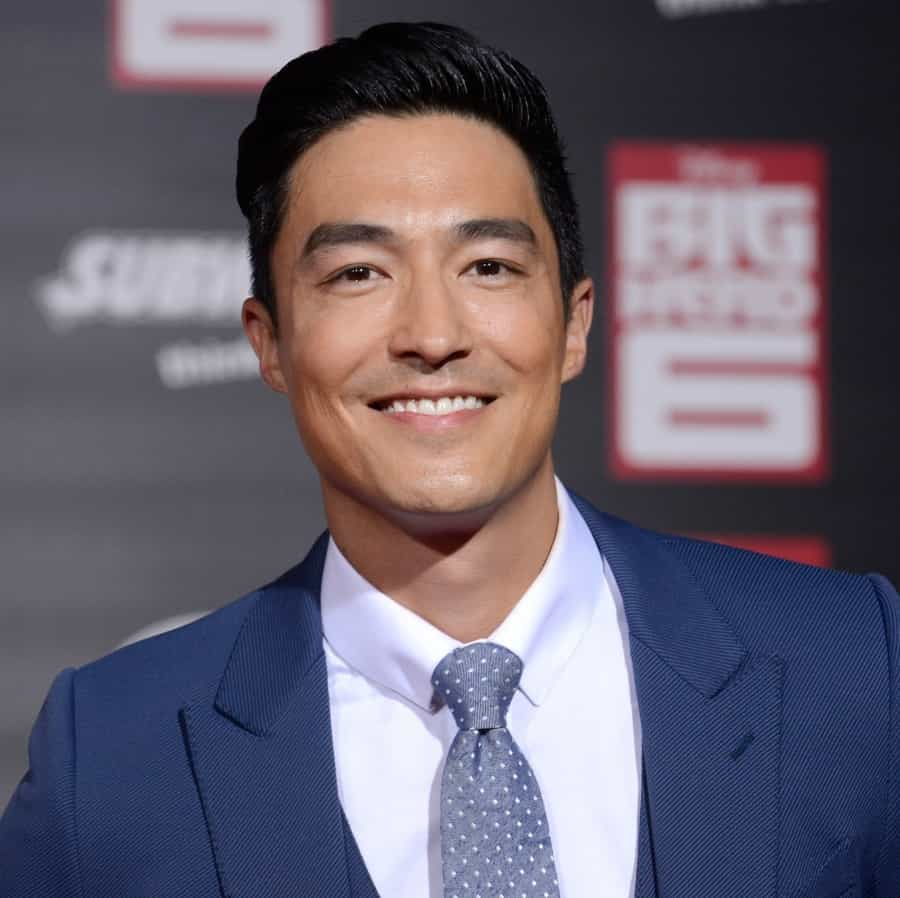

Kevin Nguyen is a Vietnamese-American writer. In his free time, he is a fashion model and through his journey of becoming a great man, helps other Asian men recover their patriotism and masculinity


The truth and reality is that a lot of people don’t know much about Asian culture other than Chinese food, Jackie Chan and Bruce Lee; oh yeah, and K-pop. The allure of the average Asian guy doesn’t quite scream fun, out-going, mysterious or dangerous. Most of them do exceptionally well in university and focus on their tight-knit family and careers, which doesn’t quite make the average female say “Quick, Jimmy! Put your penis in my vagina!” It translates to “that’s nice, Jimmy…”
That’s totally fine for a man going down the traditional route and wants to start a family. But for the average Asian guy who wants to date more and be more attractive to the opposite sex, there are some things they need to change if they want to start winning. Here’s what Asian men have to do if they want to go from zero to hero…
This might seem like a curve ball, but if you were born in the U.S. (or any non-Asian country) and you’re of Asian descent, either do your research on the interesting aspects of your family’s heritage and culture or go visit that country. Bonus points if you stay for a long period of time.
Why is this important? Because most people from these Western countries have some culture, but it’s not as interesting and as rich as yours. Knowing more about your culture only gives you the upper hand. It is so attractive when you meet someone who knows a great deal about their culture which sets them apart from bland, boring people with little to no knowledge of their own heritage.
What is it about your rich heritage that intrigues you? What is interesting? Knowing this is a step closer to higher self-esteem and self-confidence and it is a quality that makes a man interesting. It also makes you walk differently and talk differently when you know more about yourself and your roots.
It’s okay to go out and be open-minded, go on Reddit or just go out and talk to people and ask them what they like and are into. As much as I’d like to advise people to look deeply into their heritage and roots it’s also extremely rewarding to dive into other cultures around the world just to get a pulse on what people are talking about.
What this does is it gives you perspective; it helps you become more in tune with what other people around you are thinking so you can at least stay on the same page in terms of having thoughtful conversations.
People like it when you at least know how to speak their lingo, so when someone asks you if you’ve watched Breaking Bad or Stranger Things, you can at least talk about it and say you haven’t watched it but know a little bit about it.
Knowing the zeitgeist or what people are interested in doesn’t necessarily mean you have to become the other person. I’ve been a victim of this and I’ve seen it countless times where an Asian guy will completely become white-washed or become a nerd, or maybe even be so into the hip-hop community that he changes his thoughts and beliefs and panders to what is cool, especially if it isn’t something he truly believes in.
The goal is to always be yourself, and I know what you’re thinking: “Kevin! I’ve been myself but it’s just not working!” Relax. Slow and steady wins the race. If you think anime and Gundam toys are cool and love assembling toys while others might think you’re a loser, you’ve got to stick to what you love and believe in.
Never pander to what you think is cool and own yourself. An Asian guy that loves to read books, watch films and plays ping pong and who truly loves these things is much more attractive than that same guy trying to be something he’s not, such as spending time dressing up like a bad boy who is ripped and looks like Zac Efron in Baywatch.
You don’t have to be Asian to follow the below plan; this pretty much works for everyone:
1. Start implementing a workout routine that involves weight-lifting to build muscle and discipline. Do push-ups if you can and air squats if you don’t have equipment. Pull-ups are great if you have anywhere to do them.
2. Find ways to dress better, but not over-the-top. Have fun with this one: fashion is all about communicating to the world who you are inside. Make sure your wardrobe communicates positive things, such as intelligence, an easy-going nature, cleanliness, and fashionable. If you need some inspiration, go on Google, Instagram, or pick up some cool underground magazines. I find Japanese fashion magazines to be really helpful.
3. Take initiative to say hello first. Be the first to open the door for someone or to introduce yourself to everyone, not only women. Getting out your comfort zone and being friendly shows everyone else that you’re comfortable with yourself, that you’re having a good time and are an open person. This is very attractive.
4. A good haircut works for every man. Find a good barber and think about how you want to style your hair. Hair is a big deal and it shows the world how much you love yourself and who you are as a person. If you’re going for the skater/bedhead look, then have it messy. If you are a business guy or are smart and want to be presented as scholarly, then get a clean cut.
5. It is attractive when a guy loves himself and also has the humility to take compliments. (Overconfidence works wonders.)

So now you’ve accepted that you’re the underdog, have learned more about your origins and culture, have a pulse on what everyone is talking about, and are cleaning up quite nicely (as in dressing nice and treating yourself well). Now what?
Newsflash: the world doesn’t owe you shit. Women don’t owe you their attention, and you can’t expect to all of a sudden be the most handsome and attractive fella around and have thousands of babes lined up to get your autograph. This only increases your chances as it gets you more eyeballs. Just like you won’t sell stocks and bonds to a baby or boxing gloves to an elderly person, you’ve got to know your market, my friend.
Not all Asian guys can be placed in one giant box. There are so many different kinds of Asian guys, such as ones that like boxing and going out to clubs and bars, ones that are more into traveling, gaming, soccer and cooking. So you’ve got to know your market and win in that market while having fun at the same time.
You’re never going to know if you don’t go out and at least try. I knew I hated clubs and bars at night when I couldn’t have conversations with anyone through the loud and annoying music. I don’t drink alcohol and everyone just seemed so distant to me.
I’ve done better at coffee shops and supermarkets where my charm and talking skills are useful and it shows off who I am as a person. But at the same time I don’t do well in coffee shops uptown for some reason, as I find more success downtown.
You’ve got to keep looking and trying new venues and places or even travel to different countries. There is a place in this world, there is a spot somewhere that you can win in. You’re delusional if you think you can buy a car, get some nice clothes and have every girl in the world on your dong.

At last, I want to talk about getting out of the game entirely. You don’t want to win this game so that other people can have better opinions of you, because it’s not your job to care about what other people think. Are you attractive? Are you not attractive? This ends up being a useless thought because it stops you from playing your own game, the game you love, whether it be excelling in your career or continuing to do that thing you love.
It’s the moment when you’re in your zone, grinding and being confident in yourself that you become more attractive to people without even realizing it. Now, I know this sounds lovely and for the reader, there’s still an underlying curiosity.
Yes, put in the hard work; go out and make relationships with people if its that important to you. Go out and have beautiful, safe consensual sex with at least 20+ women. The more sex you have, the more you realize it’s not everything and that it wasn’t what you expected. There is still a void that only truly loving yourself can fill.
This is the antidote, and by having more sex you realize that it’s not that big of a deal and your interactions with women and the world will be totally different. You gradually end up not giving off a desperate vibe anymore and Women can sense that from 1,600 miles away. You become more confident and comfortable in your own skin. And that, my friends, is how an Asian guy can be more attractive and start winning, just not at everything.
Read More: 5 Misconceptions About White Guys With Asian Girls